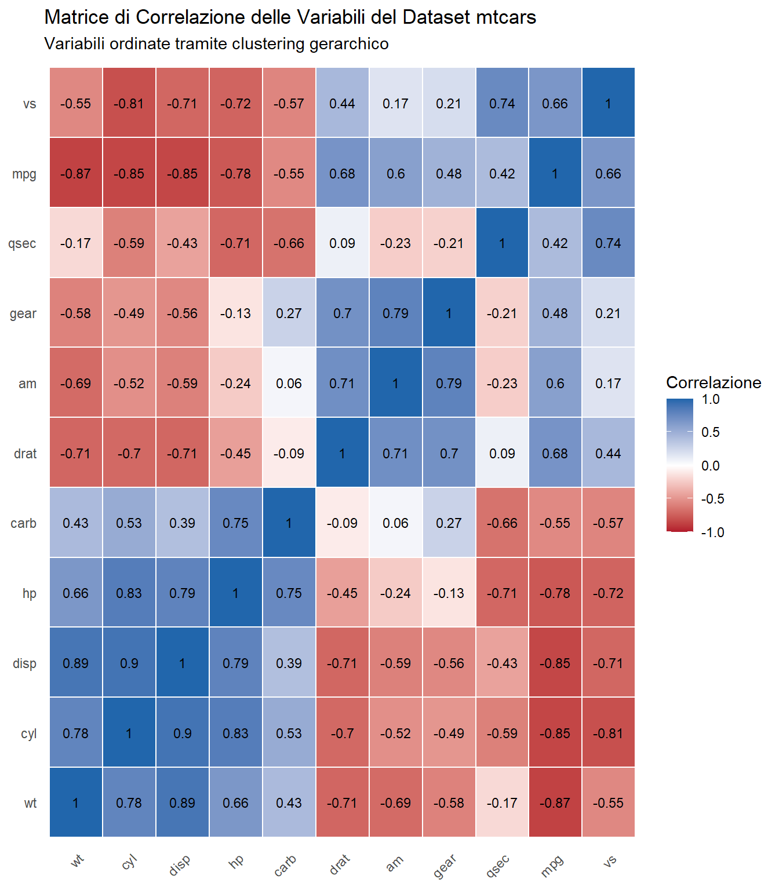
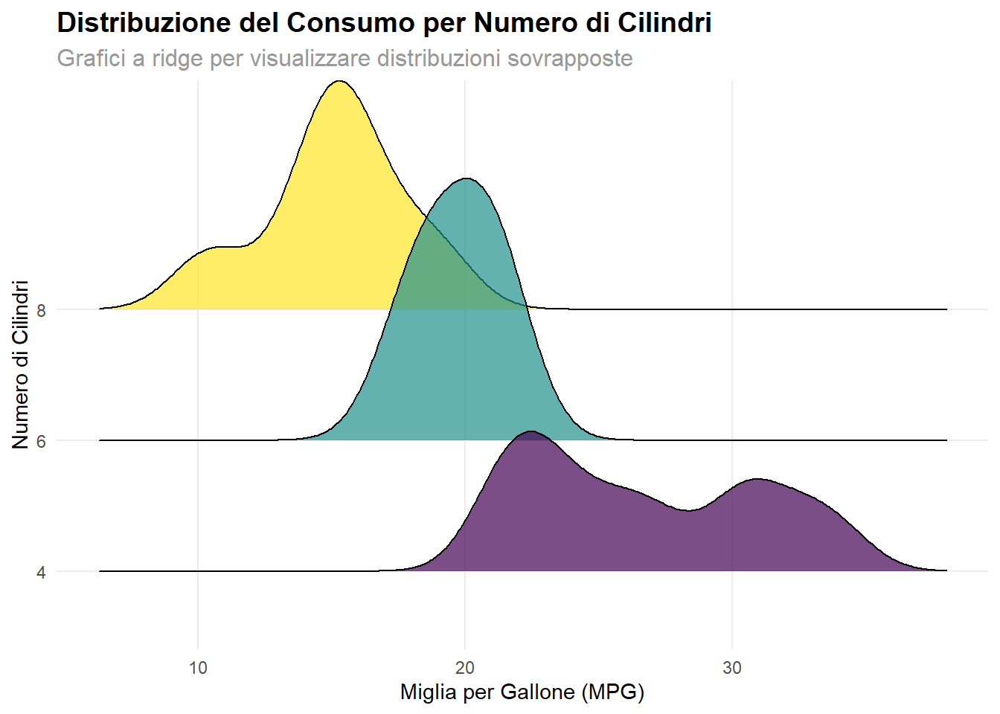
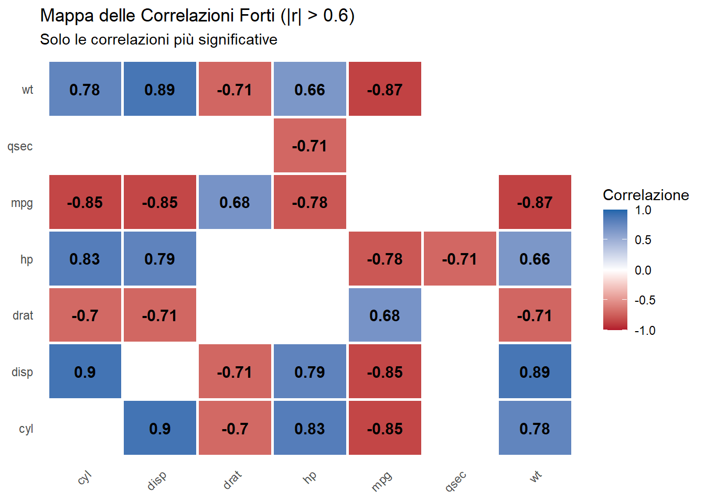
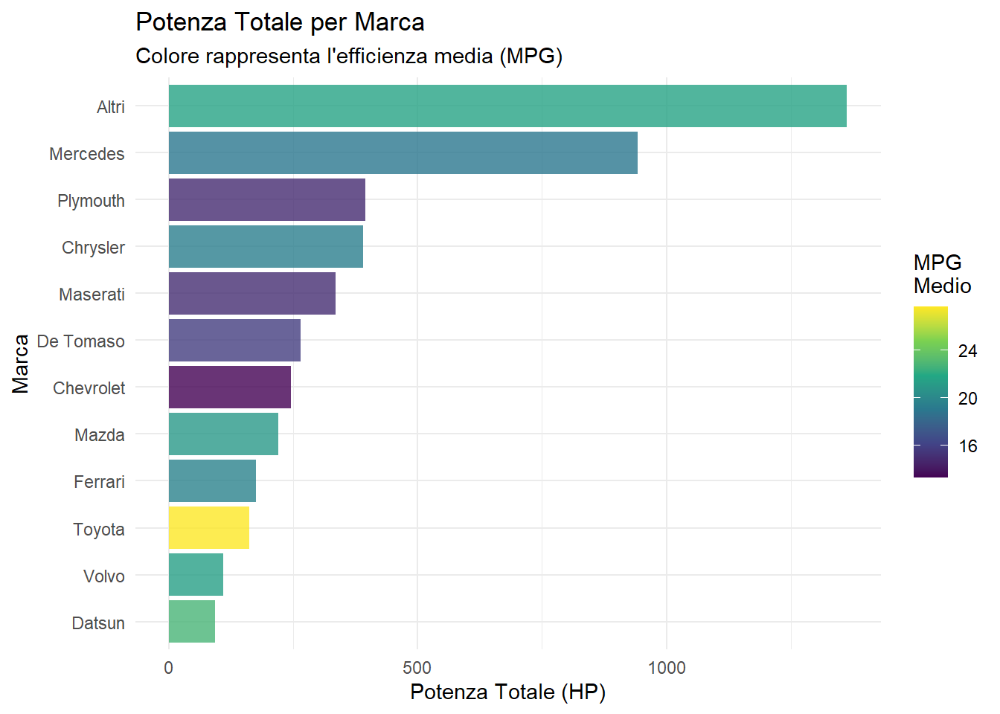

Quarto eccelle nella creazione di visualizzazioni che combinano estetica, funzionalità e interattività. In questa sezione esploreremo diverse tecniche di visualizzazione che dimostrano la versatilità della piattaforma.
# Calcola correlazionicor_matrix <- mtcars %>%select(mpg, cyl, disp, hp, drat, wt, qsec, vs, am, gear, carb) %>%cor()# Converti in formato long per ggplotcor_long <- cor_matrix %>%as.data.frame() %>%rownames_to_column("var1") %>%pivot_longer(-var1, names_to ="var2", values_to ="correlation")# Ordina le variabili con clusteringhc <-hclust(dist(cor_matrix))var_order <-rownames(cor_matrix)[hc$order]cor_long$var1 <-factor(cor_long$var1, levels = var_order)cor_long$var2 <-factor(cor_long$var2, levels = var_order)# Crea heatmapggplot(cor_long, aes(x = var1, y = var2, fill = correlation)) +geom_tile(color ="white", size =0.5) +scale_fill_gradient2(low ="#B2182B", mid ="white", high ="#2166AC",midpoint =0, limit =c(-1, 1), space ="Lab",name ="Correlazione" ) +geom_text(aes(label =round(correlation, 2)), size =3, color ="black") +labs(title ="Matrice di Correlazione delle Variabili del Dataset mtcars",subtitle ="Variabili ordinate tramite clustering gerarchico") +theme_minimal() +theme(axis.text.x =element_text(angle =45, hjust =1),axis.title =element_blank(),panel.grid =element_blank() )
Warning: Using `size` aesthetic for lines was deprecated in ggplot2 3.4.0.
ℹ Please use `linewidth` instead.

Heatmap delle correlazioni con clustering gerarchico
Grafici a Ridge (Distribuzione per Gruppi)
Code
if(use_ridges) {# Se ggridges è disponibileggplot(mtcars_viz, aes(x = mpg, y = cylinders, fill = cylinders)) +geom_density_ridges(alpha =0.7, scale =2) +scale_fill_viridis_d() +labs(title ="Distribuzione del Consumo per Numero di Cilindri",subtitle ="Grafici a ridge per visualizzare distribuzioni sovrapposte",x ="Miglia per Gallone (MPG)",y ="Numero di Cilindri") +theme(legend.position ="none")} else {# Alternativa con facet_wrapggplot(mtcars_viz, aes(x = mpg, fill = cylinders)) +geom_density(alpha =0.7) +facet_wrap(~cylinders, ncol =1, scales ="free_y") +scale_fill_viridis_d() +labs(title ="Distribuzione del Consumo per Numero di Cilindri",subtitle ="Density plots separati per ogni configurazione",x ="Miglia per Gallone (MPG)",y ="Densità") +theme(legend.position ="none")}
Picking joint bandwidth of 1.38

Distribuzione del consumo per numero di cilindri
Grafici Compositi con Layout Multipli
Code
# Grafico 1: Scatter plotp1 <-ggplot(mtcars_viz, aes(x = wt, y = mpg, color = transmission)) +geom_point(size =3, alpha =0.7) +geom_smooth(method ="lm", se =FALSE) +scale_color_viridis_d(end =0.8) +labs(title ="A) Peso vs Consumo", x ="Peso", y ="MPG")# Grafico 2: Boxplotp2 <-ggplot(mtcars_viz, aes(x = cylinders, y = hp, fill = cylinders)) +geom_boxplot(alpha =0.7) +geom_jitter(width =0.2, alpha =0.5) +scale_fill_viridis_d() +labs(title ="B) Potenza per Cilindri", x ="Cilindri", y ="HP") +theme(legend.position ="none")# Grafico 3: Barplotp3 <- mtcars_viz %>%count(efficiency_class, transmission) %>%ggplot(aes(x = efficiency_class, y = n, fill = transmission)) +geom_col(position ="dodge", alpha =0.8) +scale_fill_brewer(type ="qual", palette ="Set2") +labs(title ="C) Efficienza per Trasmissione", x ="Classe Efficienza", y ="Conteggio")# Grafico 4: Density plotp4 <-ggplot(mtcars_viz, aes(x = qsec, fill = transmission)) +geom_density(alpha =0.6) +scale_fill_brewer(type ="qual", palette ="Set1") +labs(title ="D) Distribuzione Tempi 1/4 Miglio", x ="Secondi", y ="Densità")if(use_patchwork) {# Se patchwork è disponibile (p1 + p2) / (p3 + p4) +plot_annotation(title ="Dashboard Esplorativa del Dataset mtcars",subtitle ="Combinazione di diverse visualizzazioni per analisi multidimensionale",theme =theme(plot.title =element_text(size =16, face ="bold")) )} else {# Layout alternativo con grid base Rprint(p1)print(p2)print(p3)print(p4)}
# Prepara dati aggregatisummary_data <- mtcars_viz %>%group_by(cylinders, transmission) %>%summarise(avg_mpg =mean(mpg),avg_hp =mean(hp),count =n(),.groups ="drop" )# Crea grafico a barre interattivop_bar <-plot_ly(data = summary_data,x =~cylinders,y =~avg_mpg,color =~transmission,type ="bar",text =~paste("Conteggio:", count),hovertemplate ="Cilindri: %{x}<br>MPG medio: %{y:.1f}<br>%{text}<br>Trasmissione: %{fullData.name}<extra></extra>") %>%layout(title ="Consumo Medio per Configurazione",xaxis =list(title ="Numero di Cilindri"),yaxis =list(title ="MPG Medio"),barmode ="group" )p_bar
Warning in RColorBrewer::brewer.pal(N, "Set2"): minimal value for n is 3, returning requested palette with 3 different levels
Warning in RColorBrewer::brewer.pal(N, "Set2"): minimal value for n is 3, returning requested palette with 3 different levels
Grafico a barre interattivo con drill-down
Mappa Concettuale delle Correlazioni
Code
# Prepara dati per visualizzazione correlazioni forticor_matrix <- mtcars %>%select(mpg, cyl, disp, hp, drat, wt, qsec) %>%cor()# Trova correlazioni forti (|r| > 0.6)cor_long <- cor_matrix %>%as.data.frame() %>%rownames_to_column("var1") %>%pivot_longer(-var1, names_to ="var2", values_to ="correlation") %>%filter(abs(correlation) >0.6, var1 != var2)# Visualizza solo correlazioni fortiggplot(cor_long, aes(x = var1, y = var2, fill = correlation)) +geom_tile(color ="white", size =1) +scale_fill_gradient2(low ="#B2182B", mid ="white", high ="#2166AC",midpoint =0, limit =c(-1, 1),name ="Correlazione" ) +geom_text(aes(label =round(correlation, 2)), size =4, fontface ="bold") +labs(title ="Mappa delle Correlazioni Forti (|r| > 0.6)",subtitle ="Solo le correlazioni più significative") +theme_minimal() +theme(axis.text.x =element_text(angle =45, hjust =1),axis.title =element_blank(),panel.grid =element_blank() )

Heatmap delle correlazioni forti (alternativa a network)
Visualizzazioni Specializzate
Visualizzazioni Specializzate
Analisi delle Potenze per Marca
Code
# Simula dati per analisi marca (estrai marca dal nome)mtcars_brands <- mtcars_viz %>%mutate(brand =case_when(grepl("Merc", car_name) ~"Mercedes",grepl("Toyota|Corolla", car_name) ~"Toyota", grepl("Mazda", car_name) ~"Mazda",grepl("Datsun", car_name) ~"Datsun",grepl("Hornet|Valiant", car_name) ~"Chrysler",grepl("Duster|Challenger", car_name) ~"Plymouth",grepl("Camaro|Corvette", car_name) ~"Chevrolet",grepl("Pantera", car_name) ~"De Tomaso",grepl("Ferrari", car_name) ~"Ferrari",grepl("Maserati", car_name) ~"Maserati",grepl("Volvo", car_name) ~"Volvo",TRUE~"Altri" ) ) %>%group_by(brand) %>%summarise(total_hp =sum(hp),count =n(),avg_mpg =round(mean(mpg), 1),.groups ="drop" ) %>%arrange(desc(total_hp))# Grafico a barre della potenza totaleggplot(mtcars_brands, aes(x =reorder(brand, total_hp), y = total_hp, fill = avg_mpg)) +geom_col(alpha =0.8) +scale_fill_viridis_c(name ="MPG\nMedio") +coord_flip() +labs(title ="Potenza Totale per Marca",subtitle ="Colore rappresenta l'efficienza media (MPG)",x ="Marca", y ="Potenza Totale (HP)") +theme_minimal()

Analisi della potenza per marca (simulata)
Dashboard Interattiva Completa
Code
# Crea subplot con plotlyfig1 <-plot_ly(mtcars_viz, x =~wt, y =~mpg, color =~transmission,type ="scatter", mode ="markers",name ="Scatter") %>%layout(title ="Peso vs MPG")fig2 <-plot_ly(mtcars_viz, x =~cylinders, y =~hp, type ="box", name ="Boxplot") %>%layout(title ="HP per Cilindri")fig3 <- mtcars_viz %>%count(efficiency_class) %>%plot_ly(x =~efficiency_class, y =~n, type ="bar",marker =list(color ="steelblue")) %>%layout(title ="Distribuzione Efficienza")fig4 <-plot_ly(mtcars_viz, x =~qsec, type ="histogram",nbinsx =10, marker =list(color ="lightcoral")) %>%layout(title ="Distribuzione Tempo 1/4 Miglio")# Combina in subplotsubplot(fig1, fig2, fig3, fig4, nrows =2, titleX =TRUE, titleY =TRUE) %>%layout(title ="Dashboard Interattiva Completa")
Warning in RColorBrewer::brewer.pal(N, "Set2"): minimal value for n is 3, returning requested palette with 3 different levels
Warning in RColorBrewer::brewer.pal(N, "Set2"): minimal value for n is 3, returning requested palette with 3 different levels